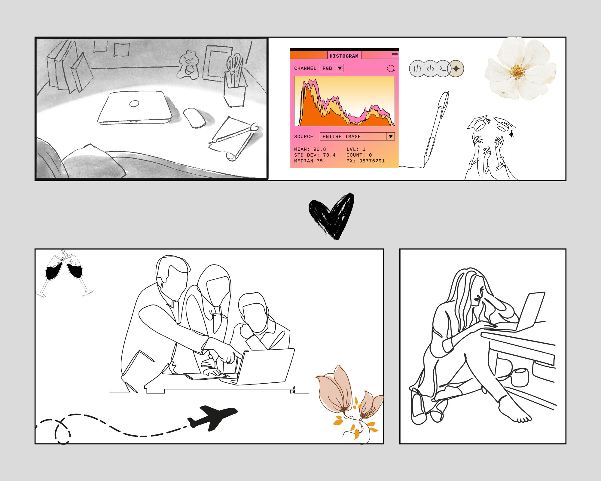

I build tools for exploring complex, real-world problems. My work spans data pipelines, geo-spatial analysis, mobile applications, research, and experimental interfaces. I care about both sides of a product: the reliability of the systems underneath and the clarity of the experience on top.
Aggregating 50K+ incarceration records across Pennsylvania with spatial analysis tools. Full-stack data infrastructure launching March 2025.
A privacy-first women's health diary and community platform built in React Native, with local SQLite persistence, that helps women track their wellness, designed around the health experiences of Black women."
This project examined discrepancies in parole recommendation algorithms using anonymized open datasets. I investigated how race correlated with misconduct rates. See more ...
Key Frenzy is a reverse Pac-Man–style typing game that transforms keyboard input into a fast-paced survival challenge. Players type quickly and accurately to keep advancing ghosts at bay, turning familiar typing mechanics into an experience shaped by rhythm, focus, and pressure.
This project explores emotional and lyrical trends in North American Hot 100 chart-toppers (1950-1990). Using sentiment analysis, theme clustering, and frequency modeling, I examined how mainstream music reflects shifting cultural moods.
This project explores the abstract nature of data stuctures and algorithms, starting with arrays. This projects gives a more tangible feel to how you can add to, delete or even grow an array in python